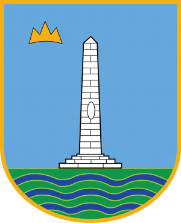
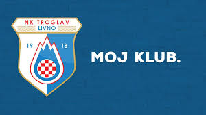
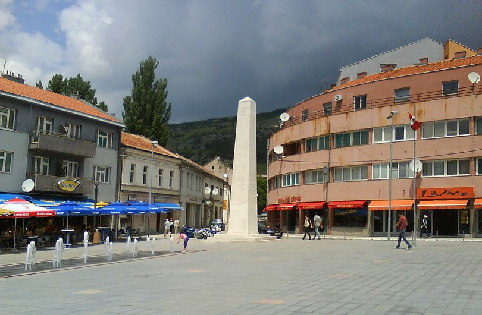

Livno

- NK Troglav
- Trg kralja Tomislava
- Livanjski konji
- SSŠSSK
Livno-grad pun potencijala
- Livno je manji grad u BiH, u kojem živi nešto više od 10 tisuća ljudi
- Livno je poznato po livanjskom siru, livanjskim konjima, te je izbornik Hrvatske nogometne reprezentacije Zlatko Dalić, podrijtlom iz Livna
- U posljednje vrijeme ljudi često iseljavaju iz ovog grada, ali se nadamo kako će se ta situacija promijeniti
Livno ima nogometni klub "Troglav 1918" koji se natječe u trećoj ligi

Livanjski konji
Konji

Trg kralja Tomislava
Trg
